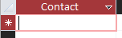
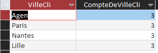
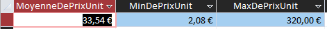
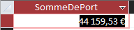

L’objectif de cette mission est de commencer à exploiter la base de données l’entreprise KDou pour pouvoir par la suite avoir des analyses et indicateurs pertinents. On souhaite faire des requêtes avec le logiciel Low Code Access.
| Indicateur 1 | Indicateur 2 | Indicateur 3 | Indicateur 4 |
|---|---|---|---|
| Donnez l’adresse du fournisseur Marie Delamare ? | Dans quelles villes la clientèle est-elle la plus importante ? Citer les 3 premières | Donner le prix moyen de vente des produits, le prix minimum et le prix maximum | On veut le chiffre d’affaire total généré avec les informations dont on dispose |
| Pour ce premier indicateur, on nous demande de donner l'adresse de Marie Delamare mais ce dernier est très intéressant car réellement, il n'y a pas de Marie Delamare dans la base de données de KDOU. Cela est donc assez pertinent d'étudier ce genre de cas. En effet, on peut le voir grâce au résultat généré par ce code SQL : | Ce deuxième indicateur nous demande de trouver les villes qui ont la clientèle la plus importante et de citer les 3 premières. Cet indicateur va permettre à KDOU de se donner une idée de qui sont ses clients "fidèles" et donc peut-être potentiellement offrir des réductions aux personnes habitant dans ces villes. Voici les 3 premières villes avec la clientèle la plus élevée générée par ce code SQL : | Cet indicateur nous demande les prix moyens, minimum et maximum des produits. Le fait d'avoir ce genre d'information va permettre à l'entreprise KDOU d'avoir une idée sur leur chiffre d'affaires, donc c'est assez pertinent. Ce code SQL va permettre de nous donner le prix moyen, le prix minimum et maximum : | Cet indicateur nous demande simplement le chiffre d'affaires total de l'entreprise KDOU. Cela va permettre à l'entreprise d'avoir une idée sur la redistribution de cet argent (salaire, exportations, importations, consommation). Ce code SQL permet de calculer le chiffre d'affaires de KDOU en fonction des commandes : |
| SELECT Fournisseur.Contact FROM Fournisseur WHERE (((Fournisseur.Contact)="Marie Delamare")); |
SELECT TOP 2 Client.VilleCli, Count(Client.VilleCli) AS CompteDeVilleCli FROM Client GROUP BY Client.VilleCli ORDER BY Count(Client.VilleCli) DESC; |
SELECT Avg(Produit.PrixUnit) AS MoyenneDePrixUnit, Min(Produit.PrixUnit) AS MinDePrixUnit, Max(Produit.PrixUnit) AS MaxDePrixUnit FROM Produit; |
SELECT Sum(Commande.Port) AS SommeDePort FROM Commande; |
|  |  |  |  |